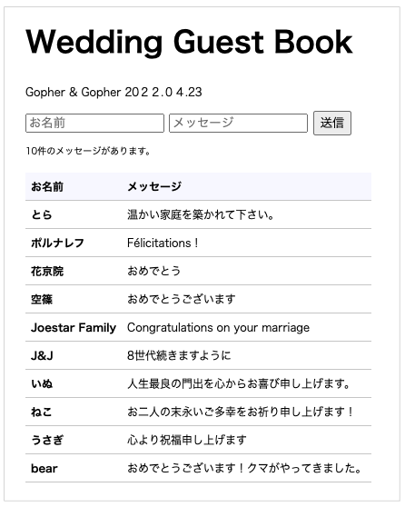

このコードラボでは、ゲストブックのプログラムを Go で書いて Google App Engine に公開することで、クラウドサービス上で Web アプリケーションを開発することが体験できます。
下記の流れになります。
- Go で書かれたサンプルコードを確認する。
- サンプルコードを Google App Engine に公開する。
- 公開したアプリケーションを確認する。
- サンプルコードを変更して 2. と 3. を行う。

Google App Engine とは
Google App Engine は Google が Google Cloud Platform 上で提供しているインフラ上でアプリケーションを実行できるサービスです。
サーバの運用・構築の手間がかからず、ニーズに合わせて規模を拡大・縮小しやすいことが利点です。
Go の開発環境は必要でしょうか？
このコードラボでは Google Cloud Shell というクラウド上の開発環境を利用します。お使いのコンピューター上で Go の開発環境を用意する必要はありません。
Google Cloud Shell の詳しい説明と使い方は、Google Cloud Shell で Go の開発をはじめよう を参照してください。
課金について
このコードラボを進めるにあたり、課金の設定が必要になります。クレジットカードをご用意ください。2022年4月現在、初回登録時に90日間限定で$300相当のクレジットが無料で利用できます。無料枠を利用してコードラボを試したら、最後に忘れずにプロジェクトを削除してください。課金の設定は「Cloud Buildを有効にする」の章に、プロジェクトの削除については「プロジェクトのお片付け」に記載しています。
プロジェクトにアクセスする
Google Cloud Shell で Go の開発をはじめよう の手順に従って、Google Cloud Console にアクセスしましょう。
はじめに、Cloud Build を有効にしましょう。Cloud Build は、Google Cloud 上でビルドを実行するサービスです。途中で課金の設定が求められます。クレジットカードが必要になりますが、2022年4月現在、初回登録時に90日間限定で$300相当のクレジットが無料で利用できます。
※既にクレジットカードを登録し、無料枠を使いきってしまっている方は料金が発生します。料金は2022年4月現在、1ビルド$0.00485〜$0.10448です（利用するCPUの数などで料金が変わります）。料金は変更されることがあるので、Cloud Buildの料金 で確認してみましょう。
それでは次に進みましょう。
Cloud Buildを有効にする
次の「Cloud Buildを有効にする」をクリックします。
Cloud Buildを有効化する画面が表示されます。「有効にする」をクリックします。

「課金を有効にする」をクリックします。
請求書先のアカウントがない場合、次の画面が表示されます。「請求先アカウントを作成」をクリックし、請求書先を登録しましょう。

「国」と「組織またはニーズ」に該当するものを選択します。利用規約を読み、チェックをいれ「続行」をクリックしましょう。

個人利用の場合は「アカウントの種類」で「個人」を選択します。「カードを追加」をクリックすると、クレジットカードかPaypalどちらかを選択できます。お支払い情報を設定したら「無料トライアルを開始」をクリックしましょう。
既に請求書先アカウントを登録している場合は、次の画面が表示されます。請求書先アカウントを選択し「アカウントを設定」をクリックしましょう。

Google Cloud Platformコンソールの Cloud Build に戻りましょう。Cloud Buildが有効になっている場合、次のように表示されます。リージョンを選択しましょう。東京リージョンは asia-northeast1 、大阪は asia-northeast2 です。今回は、東京リージョンを使用します。
GitHubからコードラボで利用するサンプルコードを取得しましょう。
Google Cloud Shell で Go の開発をはじめよう の「Google Cloud Shell で Go のプログラムを取得する」の章に従い、git clone コマンドを実行します。
$ git clone https://github.com/WomenWhoGoTokyo/codelab.gitcodelab/guestbook というディレクトリが作られていることを、Google Cloud Shell のターミナルで確認しましょう。
$ cd codelab/guestbook
$ ls
app.yaml go.mod go.sum index.go message.go post.go README.md view web※「Google Cloud Shell で Go の開発をはじめよう」では、developディレクトリに codelab を取得しています。「Google Cloud Shell で Go の開発をはじめよう」通りに進めた場合は、次のコマンドを実行してください。cd ~/develop/codelab/guestbook
guestbookディレクトリ内に、app.yaml ファイルがあります。これは Google App Engine上で動かす アプリケーションの設定ファイルです。
Google Cloud Shell で Go の開発をはじめよう の「Google Cloud Shell のエディタで Go のプログラムを編集する」の章に従って、Goolge Cloud Shell を立ち上げ、エディタを起動しましょう。 codelab > guestbook > app.yaml の順に開き、ファイルの中身をみてみましょう。
runtime: go116
main: ./web
handlers:
- url: /.*
script: auto
secure: alwaysapp.yaml では、利用する開発言語やそのバージョン等を設定することができます。
このコードラボでは、開発言語は Go、ランタイムのバージョンは 1.16 を使用します。
アプリケーションを起動したときに一番最初に読み込まれる処理は web/main.go に書かれています。
go mod tidy コマンドを使って、パッケージを更新しましょう。Goでは go.mod ファイルにビルド時に必要なパッケージが記載されています。 go mod tidy は、 go.mod に記載されているパッケージの依存関係の更新をおこないます。
以下のコマンドを実行します。
$ go mod tidyGoogle App Engine に、Goのプログラム、guestbook を公開しましょう（デプロイといいます）。ターミナルを開き、次のコマンドを実行します。
$ gcloud app deploy --project {プロジェクトID} --version {バージョン} .リージョンを選択します。リージョンはあとから変更することができません。ここでは asia-northeast1 を選びました。
※環境によってリージョンと番号の組み合わせは異なります。リージョン名を確認してから先に進んでください。
You are creating an app for project [my-codelab-347616].
WARNING: Creating an App Engine application for a project is irreversible and the region
cannot be changed. More information about regions is at
<https://cloud.google.com/appengine/docs/locations>.
Please choose the region where you want your App Engine application located:
[1] asia-east1 (supports standard and flexible)
[2] asia-east2 (supports standard and flexible and search_api)
[3] asia-northeast1 (supports standard and flexible and search_api)
[4] asia-northeast2 (supports standard and flexible and search_api)
[5] asia-northeast3 (supports standard and flexible and search_api)
[6] asia-south1 (supports standard and flexible and search_api)
: （略）
[23] us-west4 (supports standard and flexible and search_api)
[24] cancel
Please enter your numeric choice:3開始するサービスの設定内容が表示されます。「Y」を入力して先に進みましょう。
Creating App Engine application in project [my-codelab-347616] and region [asia-northeast1]....done.
Services to deploy:
descriptor: [/home/kawano_misato/develop/codelab/guestbook/app.yaml]
source: [/home/kawano_misato/develop/codelab/guestbook]
target project: [my-codelab-347616]
target service: [default]
target version: [my-codelab]
target url: [https://my-codelab-347616.de.r.appspot.com]
target service account: [App Engine default service account]
Do you want to continue (Y/n)?Yデプロイが成功すると、次のように表示されます。
Beginning deployment of service [default]...
Uploading 11 files to Google Cloud Storage
9%
18%
: （略）
100%
File upload done.
Updating service [default]...done.
Setting traffic split for service [default]...done.
Deployed service [default] to [https://my-codelab-347616.de.r.appspot.com]
You can stream logs from the command line by running:
$ gcloud app logs tail -s default
To view your application in the web browser run:
$ gcloud app browse公開したアプリケーションを確認しましょう。
Google Cloud Platformコンソールのサイドメニューから AppEngine > バージョン をクリックします。
「Google App Engine に公開する」の章で、デプロイ時に指定したバージョン名をクリックします。
新しいタブが起動し、次のような画面が表示されます。
"お名前"、"メッセージ" に適当な文字列を入力して、送信ボタンをクリックしてみましょう。
データを見る
Google Cloud Platform コンソール上でもデータを確認することができます。
Datastore > エンティティ をクリックしましょう。

先程入力したデータが格納されていることが確認できます。
Google Cloud Shell で Go の開発をはじめよう の手順に従って、Goolge Cloud Shell のエディタを立ち上げます。
文字列が書いてあるファイルを開く
codelab > guestbook > index.go を開きましょう。
文字列を変更する
index.go の下記の部分を好きな文字列に変更します。

Before:
var title = "ゲストブック"
var description = "結婚式などの受付で名前や住所, メッセージを記帳してもらうためのノートのことです。"After (例):
var title = "Wedding Guest Book"
var description = "Gopher & Gopher 2022.04.23"File > Save を選択して、保存します。
変更したプログラムを公開する
コンソールでコマンドを実行して、Go のプログラムを公開しましょう。
$ gcloud app deploy --project {プロジェクトID} --version {バージョン} .アプリケーションを確認する
ブラウザを更新しましょう。
タイトルとその下の文言が変更されていることを確認しましょう。
まず、"お名前" と "メッセージ" に適当な文字列を入力して、送信ボタンを押下することを繰り返して、10件ほど登録してみましょう。

さらにもう1件の "お名前" と "メッセージ" を登録しましょう。
全部で11件の "お名前" と "メッセージ" を登録しましたが、表示は10件で、一番古いメッセージが表示されなくなりました。
それでは、登録した11件の "お名前" と "メッセージ" をすべて一覧で表示できるようにしましょう。
文字列が書いてあるファイルを開く
codelab > guestbook > index.go を開きましょう。
件数を変更する
index.go の下記の部分を、15件まで取得するように変更します。
Before:
q := datastore.NewQuery(r.Host).Order("-createdAt").Limit(10)After:
q := datastore.NewQuery(r.Host).Order("-createdAt").Limit(15)File > Save を選択して、保存します。
変更したプログラムを公開する
ターミナルでコマンドを実行して、Go のプログラムを公開しましょう。
$ gcloud app deploy --project {プロジェクトID} --version {バージョン} .アプリケーションを確認する
ブラウザの更新ボタンを押下して、11件の "お名前" と "メッセージ" が表示されていることを確認しましょう。
15件までは一覧に表示することができるようになりました。
"お名前" と "メッセージ" を変更できるようにします。

あらかじめ、ソースコードの一部は用意されています。
- 一覧に編集画面へのリンクを作成するためのデータの用意
- 編集画面のHTML
一覧に編集リンクを追加する
変更箇所のファイルを開く
codelab > guestbook > view > index.html を開きましょう。
一覧にリンクを足す
一覧に編集画面へのリンクを追加します。
編集画面のURLを edit 、1件の "お名前" と "メッセージ" を識別するための変数名を key とします。
Before:
<div class="messages">
{{if lt 0 .Count}}
<div class="message">
<div class="message-header">お名前</div>
<div class="message-header">メッセージ</div>
</div>
{{end}}
{{range .Messages}}
<div class="message">
<h2 class="message-name">{{.Name}}</h2>
<p class="message-text">{{.Message}}</p>
</div>
{{end}}
</div>After:
<div class="messages">
{{if lt 0 .Count}}
<div class="message">
<div class="message-header">お名前</div>
<div class="message-header">メッセージ</div>
<div class="message-header">編集</div>
</div>
{{end}}
{{range .Messages}}
<div class="message">
<h2 class="message-name">{{.Name}}</h2>
<p class="message-text">{{.Message}}</p>
<div class="message-link"><a href="./edit?key={{.ID}}">編集する</a></div>
</div>
{{end}}
</div>File > Save を選択して、保存します。
変更したプログラムを公開する
コンソールでコマンドを実行して、Go のプログラムを公開しましょう。
$ gcloud app deploy --project {プロジェクトID} --version {バージョン} .アプリケーションを確認する
まだリンク先のページはありませんが、一覧にリンクが追加されました。
編集リンクをクリックしたら編集画面に遷移する
ファイルを新規作成する
codelab > guestbook > edit.go を新規作成しましょう。
File > New File をクリックします。
edit.go と入力します。
編集画面のコードを書く
下記のように書きましょう。
package guestbook
import (
"context"
"fmt"
"html/template"
"net/http"
"strconv"
"os"
"cloud.google.com/go/datastore"
)
var editTmpl = template.Must(template.ParseFiles("./view/edit.html"))
// EditTemplate is a structure of edit template.
type EditTemplate struct {
Title string
Name string
Message string
ID int64
}
func Edit(w http.ResponseWriter, r *http.Request) {
ctx := context.Background()
client, err := datastore.NewClient(ctx, os.Getenv("GOOGLE_CLOUD_PROJECT"))
if err != nil {
http.Error(w, fmt.Sprint(err), http.StatusInternalServerError)
return
}
k := r.FormValue("key")
keyID, err := strconv.ParseInt(k, 10, 64)
if err != nil {
http.Error(w, fmt.Sprint(err), http.StatusBadRequest)
return
}
var msg Message
key := datastore.IDKey(r.Host, keyID, nil)
if err = client.Get(ctx, key, &msg); err != nil {
http.Error(w, fmt.Sprint(err), http.StatusInternalServerError)
return
}
edt := &EditTemplate{
Title: title,
Name: msg.Name,
Message: msg.Message,
ID: keyID,
}
if err := editTmpl.Execute(w, edt); err != nil {
http.Error(w, err.Error(), http.StatusInternalServerError)
}
}File > Save を選択して、保存します。
変更箇所のファイルを開く
/edit にアクセスすると画面が表示されるようにします。
codelab > guestbook > web > main.go を開きましょう。
/edit にアクセスすると、edit.go の func edit(...) が呼ばれるようにします。
下記を追記しましょう。
http.HandleFunc("/edit", guestbook.Edit)File > Save を選択して、保存します。
変更したプログラムを公開する
コンソールでコマンドを実行して、Go のプログラムを公開しましょう。
$ gcloud app deploy --project {プロジェクトID} --version {バージョン} .アプリケーションを確認する
一覧から編集リンクをクリックすると...
編集画面に遷移します。
編集画面で送信ボタンをクリックすると変更を更新する
変更箇所のファイルを開く
codelab > guestbook > post.go を開きましょう。
更新できるようにする
"お名前" と "メッセージ" を識別するための変数である key があるときは更新を、ないときには新規追加をするように処理を変更します。
① Before:
import (
"context"
"fmt"
"net/http"
"time"
"cloud.google.com/go/datastore"
)① After:
import (
"context"
"fmt"
"net/http"
"strconv"
"time"
"cloud.google.com/go/datastore"
)② Before:
key := datastore.IncompleteKey(r.Host, nil)
if _, err := client.Put(ctx, key, msg); err != nil {
http.Error(w, fmt.Sprint(err), http.StatusInternalServerError)
}② After:
var key *datastore.Key
k := r.FormValue("key")
if k == "" {
key = datastore.IncompleteKey(r.Host, nil)
} else {
keyID, err := strconv.ParseInt(k, 10, 64)
if err != nil {
http.Error(w, fmt.Sprint(err), http.StatusBadRequest)
return
}
key = datastore.IDKey(r.Host, keyID, nil)
}
if _, err := client.Put(ctx, key, msg); err != nil {
http.Error(w, fmt.Sprint(err), http.StatusInternalServerError)
}File > Save を選択して、保存します。
変更したプログラムを公開する
コンソールでコマンドを実行して、Go のプログラムを公開しましょう。
$ gcloud app deploy --project {プロジェクトID} --version {バージョン} .アプリケーションを確認する
編集画面でフォームの中身を変更し「送信」をクリックしてみましょう。
変更された内容が一覧に反映されます。
お疲れさまでした！このコードラボはこれで終りです。引き続き、Goのプログラムを編集して、是非お楽しみください。
（2022年4月現在）Cloud Build は、デフォルトの状態だと、1日あたりのBuild料金は120分までは無料でお使いいただけます。また、 Google App Engineも、無料で始めることができるので実質的に導入コストはかかりませんが、利用するごとに課金が行われる従量制となっています。Google App Engineは、スタンダード環境とフレキシブル環境で違いがあり、スタンダード環境は一日の無料割り当て分があります。フレキシブル環境は、無料割り当てがないため、スタンダードの環境を利用するようにしましょう。
Cloud BuildもGoogle App Engineも従量制となっているため、無料枠を超えると料金がかかります。気になる方はコードラボが終了したら、プロジェクトのお片付けをしましょう。プロジェクトを削除すると、有効化したCloud Buildの設定やGoogle App Engineにデプロイしたリソースも削除されます。
このコードラボでは、ゲストブックのプログラムを Go で書いて Google App Engine に公開することで、クラウドサービス上で Web アプリケーションを開発することを体験しました。
ここで触れたことをきっかけに、Google App Engine と Go を利用したものづくりをもっともっと楽しんでいただけますように！と願っています。